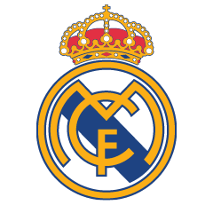

Реал Мадрид
Зидан перешёл в «Реал» летом 2001 года за рекордные на тот момент 75 миллионов евро. Адаптация к новой стране и футболу для Зидана проходила тяжело, он долго находился в поиске своей привычной игры, но при этом забивал. После первых туров своего дебютного сезона француз числился в лидерах среди бомбардиров Примеры, но яркой игры при этом не демонстрировал ни он, ни команда. Тренеру команды Висенте Дель Боске пришлось изменить привычную схему «Реала» и найти в ней оптимальное место для Зидана. Поиски увенчались успехом к ноябрю 2001 года. Но по-настоящему Зидан проявил себя, начиная с зимы 2002 года. Памятными остались два матча в начале 2002 года — против «Депортиво» и «Валенсии». В том же сезоне 2001/2002 Зидан помог «Реалу» выиграть Лигу чемпионов, забив гол с лёта левой ногой после подачи Роберто Карлоса в финальном матче против леверкузенского «Байера». Тот матч мадридцы выиграли со счётом 2:1, а гол Зидана стал победным. В сезоне 2002/2003 он стал чемпионом Испании. В мадридском клубе Зидан был лидером, яркой звездой из созвездия «Реала» тех времён (Зидан, Фигу, Роналдо, Бекхэм, Роберто Карлос, Рауль).